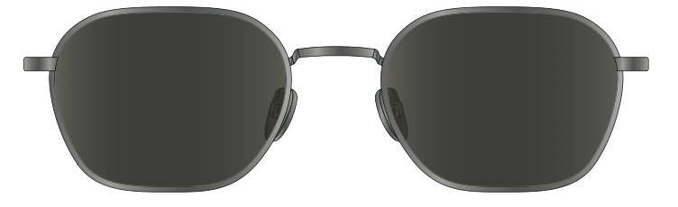
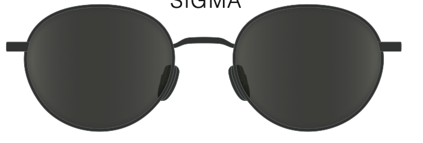
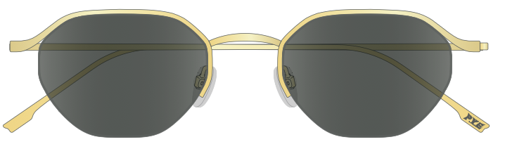
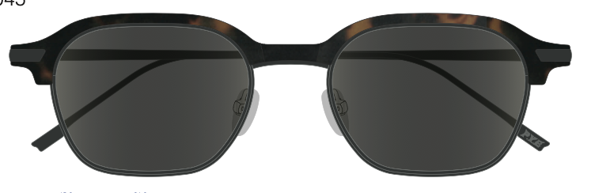
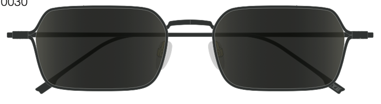
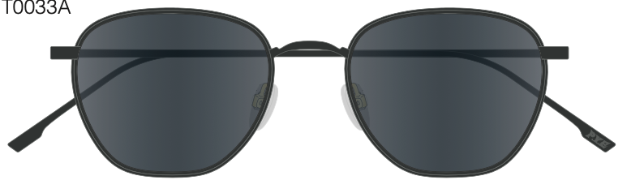
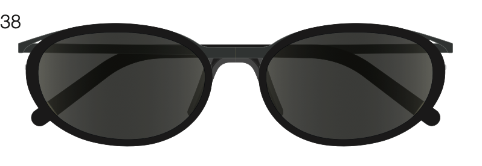
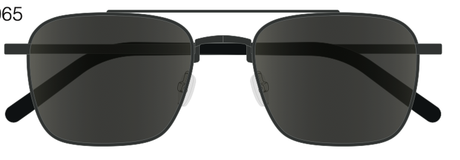
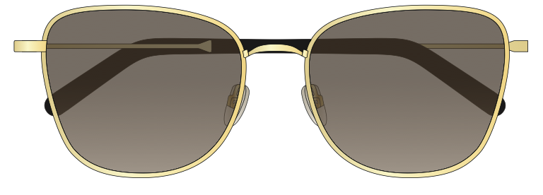

30 названий из азиатского кино (Kurosawa, Kitano, Wong Kar-wai, Lee Chang-dong, Kore-eda, Park Chan-wook), подобранных к 9 оправам.

Угловатая геометрия, точные линии. Фильмы с визуальной точностью, минимализмом, хореографией.

Классический круг, полнота. Фильмы о тепле, завершённости, человечности.

Золотой полигон, ювелирный. Фильмы-драгоценности: эфемерные, мерцающие, призрачные.

Интеллект + дерзость. Фильмы интеллектуальные, многослойные, философские.

Широкий, масштабный. Фильмы с эпическим масштабом, широким экраном, бесконечным пространством.

Мягкая геометрия, баланс. Фильмы о тишине, нежности, повседневной красоте.

Два слоя, два материала. Фильмы о слоях реальности, двойственности, времени.

Навигатор, двойной мост. Фильмы о направлении, пути, навигации через хаос.

Золотой butterfly. Фильмы о женской силе, золотой красоте, тихом достоинстве.